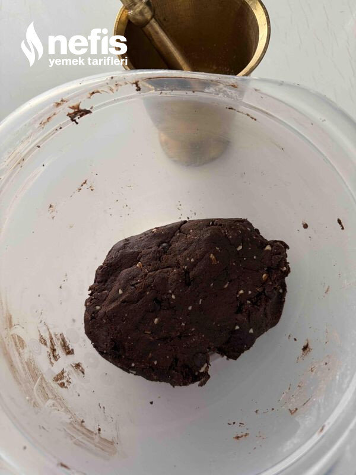

🍽️ 12-14 kişilik⏱️ Hazırlık: 15 dk🔥 Pişirme: 25 dk🏷️ Tatlı Tarifleri🏷️ Şerbetli Tatlılar
Malzemeler
- 3 su bardağı su
- 2 su bardağı şeker
- 4-5 damla limon suyu
- 125 gram oda sıcaklığında tereyağı
- 2 adet yumurta
- 3 yemek kaşığı kakao
- 1 çay bardağı pudra şekeri
- 1+3/4 (bir yarım+bir çeyrek) su bardağı un
- 3 yemek kaşığı irmik
- 3 yemek kaşığı toz badem
- 1 paket kabartma tozu
- 1 avuç damla çikolata
- Damla çikolata veya hindistan cevizi tozu
Hazırlanışı
- Önce şerbeti hazırlıyoruz. Kaynamaya başlayınca 5-6 dakika kaynayınca limon suyu ekliyoruz birkaç dakika sonra ocağı kapatıyoruz.
- Oda sıcaklığındaki tereyağını karıştırma kabına alıyoruz yumurtaları ekleyip çırpma teliyle pürüzsüz oluncaya kadar çırpıyoruz.
- Un, kakao,pudra şekeri, kabartma tozu, damla çikolata,irmik ve toz bademi ekleyip yumuşak kıvamlı bir hamur hazırlıyoruz( unu kontrollü ekliyoruz).
- Hazırladığımız hamurdan ceviz büyüklüğünde koparıp yuvarlıyoruz, tepsiye dizerek üzerinden hafifçe bastırıp birkaç parça damla çikolata yerleştiriyoruz.
- Önceden ısıttığımız 180 derece fırında 25_30 dakika pişiriyoruz. Fırından çıkan sıcak şekerparelerin üzerine hazırladığımız ılınan şerbeti gezdiriyoruz.
- Tatlı soğuyunca fazla şerbeti süzebiliriz soğuyan tatlımızı birkaç saat sonra servis yapabiliriz afiyet olsun 😊